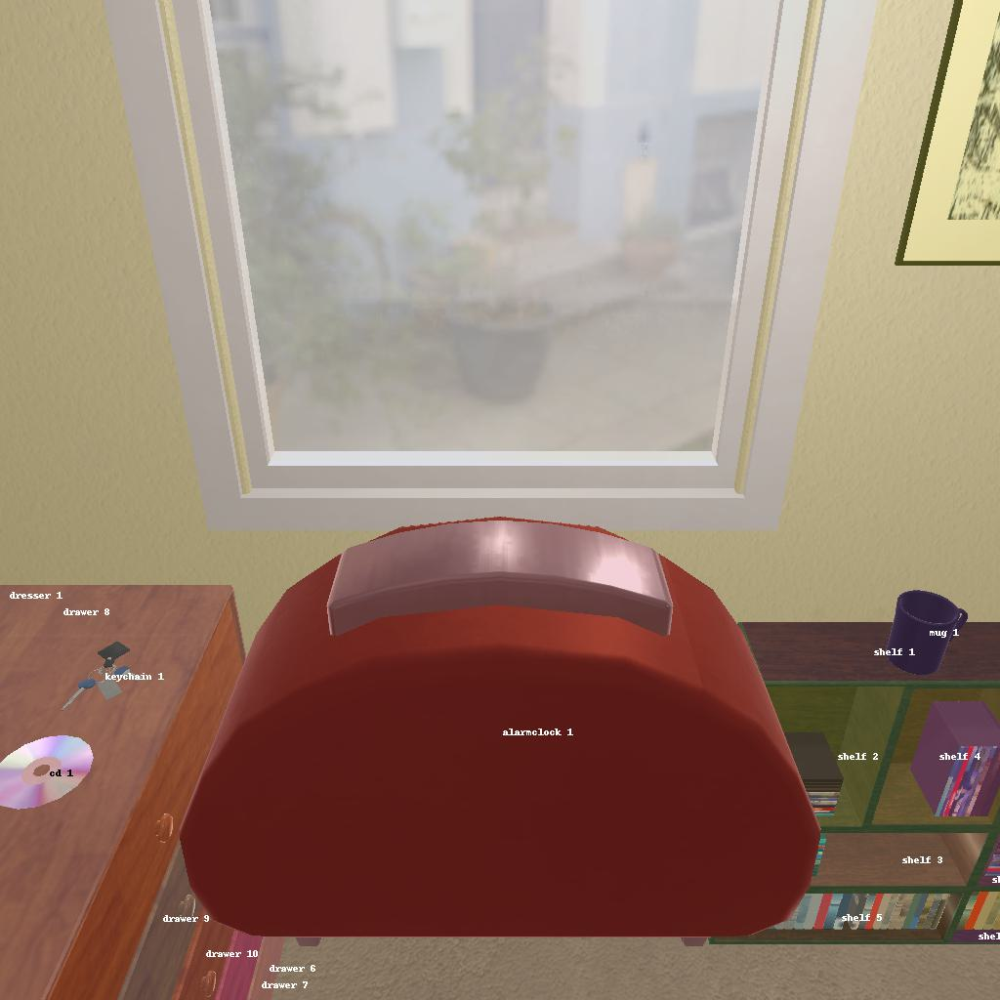

---------------------------------------------------------task: 1---------------------------------------------------------
--------------------------------------------------------------------------------------------------------------------------------------------------------------------
--------------------------------------------------------------------------------------------------------------------------------------------------------------------
Step:--------------------------------------------------------------------------6-------------------------------------------------------------------------------
----------------------------------------
VLM Prompt:
Image1:
**Instruction**
1. Analyze the provided image to identify all visible household objects, focusing on those relevant to the task description "examine the alarmclock with the desklamp."
2. Use the analysis of the image and the task hint "The agent must find an object of the desired type, locate and turn on a light source with the desired object in-hand." to answer the question: what is the most reasonable action in the choices for the task description "examine the alarmclock with the desklamp"?
4. Decide and write the answer using the template: The answer is: (i): , where i is the real number. If there is no desired object in the image, search every place based on **Initial Observation** to find the object. And if no one is exactly correct, choose a similar answer.
**Initial Observation**
You are in the middle of a room. Looking quickly around you, you can see bed (1), dresser (1), drawer (1-10), garbagecan (1), shelf (1-7)
**Answer Choices**
(1): go to bed 1
(2): go to dresser 1
(3): go to drawer 1
(4): go to drawer 2
(5): go to drawer 3
(6): go to drawer 4
(7): go to drawer 5
(8): go to garbagecan 1
(9): go to drawer 6
(10): go to drawer 7
(11): go to drawer 8
(12): go to drawer 9
(13): go to drawer 10
(14): go to shelf 1
(15): go to shelf 3
(16): go to shelf 4
(17): go to shelf 5
(18): go to shelf 6
(19): go to shelf 7
(20): put alarmclock 1 in/on shelf 2
(21): examine alarmclock 1
(22): examine shelf 2
**Answer**
Let's think step by step by following the instructions.
----------------------------------------
----------------------------------------
Original Response:
Firstly, we need to identify the household objects in the image that are relevant to the task. The task is to "examine the alarmclock with the desklamp." Looking at the image, we can see an "alarmclock 1" on what seems to be a bedside table or dresser.
Now, based on the task hint, we need to find a light source and turn it on with the alarm clock in hand. However, there is no desklamp visible in the image provided. We must then search the room based on the initial observation to find the desklamp.
Given the answer choices, there is no direct action to "find desklamp" or similar. However, "go to dresser 1" seems the most reasonable action as the alarm clock is on the dresser, and the desklamp could be near it or in one of its drawers.
The answer is: (2): go to dresser 1.
----------------------------------------
----------------------------------------
>>> Refine Original VLM Response and Get Pure Action: go to dresser 1
----------------------------------------
-----------------------------------------------------------------
Running time: 18.534244775772095 seconds
Total Money: 0.40034000000000003
-----------------------------------------------------------------
-----------------------------------------------------------------
Text Observation:You arrive at loc 1. On the dresser 1, you see a desklamp 1, a laptop 1, a keychain 1, a cd 1, and a pen 1.
-----------------------------------------------------------------
UNSUCCEED